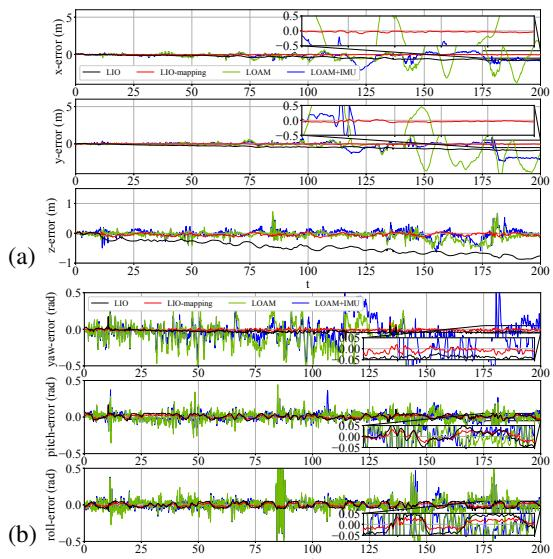

原图注（Fig. 1）：Lidar-IMU odometry framework. The subsection that discussed each block is given after the circular number.（里程计总框架，每个方块旁标了对应小节编号。）
怎么看这张图：这张图就是全篇的总纲。从左到右串起「IMU 预测 → 预积分 → 去畸变 → 特征提取 → 建局部图 → 联合优化」一整条链路；注意圈号①到⑥，它们正好对应后面每一小节的功能。读者盯住这条从左到右的箭头链，就能知道 IMU 在每一环出现在哪里。
2. ★ IMU 的三种用法：从松耦合到紧耦合
先讲人话。IMU（惯性测量单元，就是手机里那个陀螺仪+加速度计的组合）在激光 SLAM 里一共能派三种用场，论文把它们都点了出来：
原图注（Fig. 2）：Local window. The local map consists of the previous point-clouds before $j$ and starting from $o$. The optimization window contains the frame between $p$ and $j$.（局部图＝从 $o$ 到 $j$ 之前的旧点云；优化窗口＝帧 $p$ 到 $j$ 之间。）
怎么看这张图：这张图把两个窗口分开画——下面那条长带是「局部地图窗口（$o$ 到 $p$ 的旧点云，用来配准用）」，上面那条短带是「优化窗口（$p$ 到 $j$，真正参与联合优化的帧）」。窗口随帧推进而滑动，就是固定滞后平滑的直观样子。
这张图在画什么：一条时间轴上排着一串关键帧（小方块）；绿色虚线框住「当前优化窗口」即最近 N 帧；最老那帧（红框）被抽走时，它和其他变量之间的所有连线被压成一根「先验弹簧」拴在剩余变量上。
怎么看这张图：① 虚线框随帧右移，窗口大小固定，这就是「固定滞后」；② 红框帧离开窗口前先被边缘化（Schur 补），所以不是丢信息而是压成先验；③ 底部那句话点出代价：先验弹簧只在它被线性化的那一点附近有效，偏离太远会失真——这正是第二季 0032 课强调的。
要记住的一句话：边缘化＝把旧帧折叠成一根先验弹簧，保住历史约束，但也锁定了线性化点。
5. 旋转约束精化：把全局地图掰回水平
紧耦合里程计只用「局部窗口」，长时会慢慢漂。本篇的第二路 Refinement 用来兜底：把里程计给出的位姿当先验，再把其中的旋转分量当成一条「虚拟测量」加进全局配准，专门约束滚转和俯仰（释放 z 轴航向，因为航向在激光里不可观）。
原图注（Fig. 3）：Rotationally constrained mapping. The odometry pose first serves as a prior for the global point-cloud registration. Then the rotational component from the odometry is applied as a virtual measurement to constrain the optimization.（里程计位姿先当全局配准的先验，再把旋转分量当虚拟测量去约束优化。）
怎么看这张图：左半是「里程计位姿作先验」的全局配准，右半强调把旋转分量单独抽出来当虚拟测量。读者盯住「virtual measurement」那根线，就知道精化阶段真正约束的是姿态中的旋转部分，而不是整个位姿。
原图注（Fig. 5）：Trajectories from different methods. LIO can provide relatively accurate poses... Neither LOAM nor LOAM+IMU can work when the motion becomes rapid.（各方法轨迹；LIO 较准；快速运动时 LOAM 与 LOAM+IMU 都失效。）
怎么看这张图：对比几条轨迹谁贴合真值。后半段（快速运动）里 LOAM 类明显跑飞，而 LIO-mapping（深绿）沿真值走。这正是「把 IMU 请进优化」在退化/快速场景下的回报。

原图注（Fig. 6）：(a) Translation errors. (b) Rotational errors. In general, our methods can provide much smoother results than their counterparts.（平移/旋转误差；本文方法更平滑。）
怎么看这张图：两张误差随时间曲线，LIO-mapping 的曲线比 LOAM 类更平滑、更不发散。配合 Fig.5 一起看，说明紧耦合+旋转约束精化带来的是「长时间一致性」，而不只是单点准。